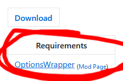

Missing Requirements
Unknown Mod Name
has requirements you must also install in order for it to load.
AsyncUtil
OptionsWrapper
UserFeedback
Requirements will always be listed on the mod download page.
